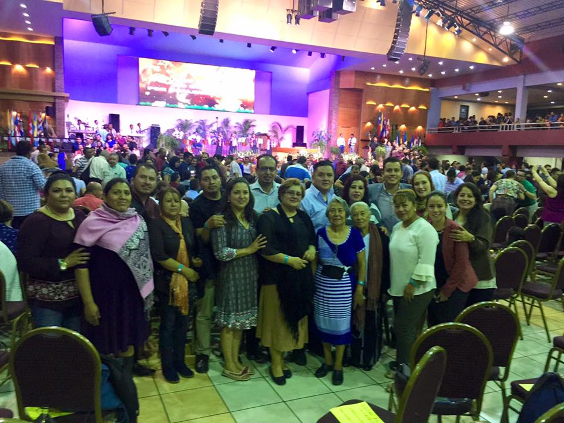
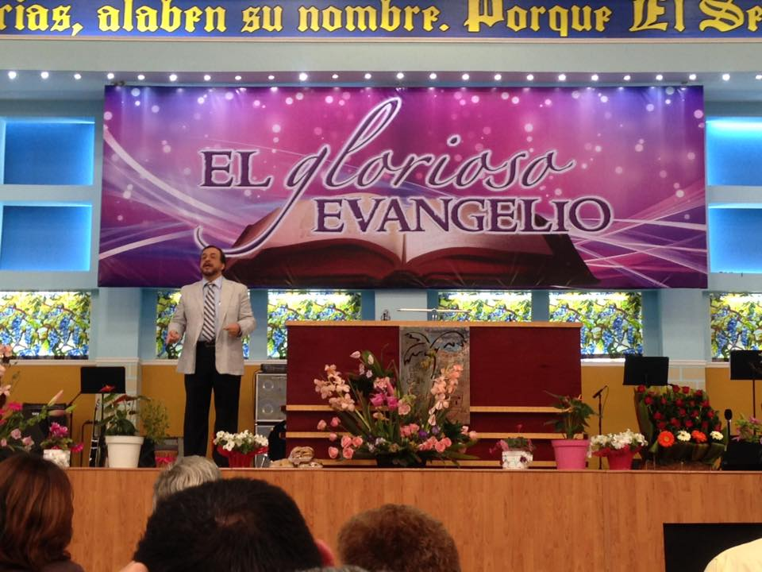

No Religiosidad
Ante todo es tener en claro que el trabajo comienza en el interior y lo que se percibe en el exterior es solo el reflejo.
No Simplicidad
Ante todo es tener en claro que el trabajo comienza en el interior y lo que se percibe en el exterior es solo el reflejo.
No Libertinaje
Ante todo es tener en claro que el trabajo comienza en el interior y lo que se percibe en el exterior es solo el reflejo.